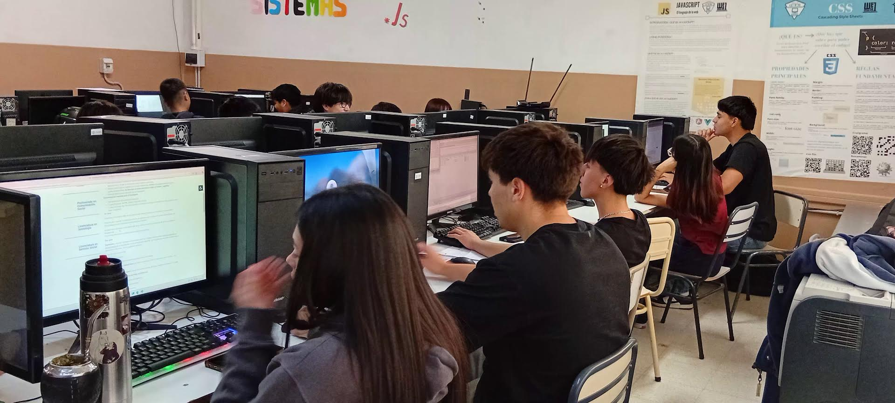

WEB I
En este taller estuvimos aprendiendo a crear nuestras propias páginas web usando HTML, CSS y un poco de JavaScript(lo usamos una vez,por suerte.). A lo largo del año fuimos probando, diseñando y armando diferentes proyectos/tareas.